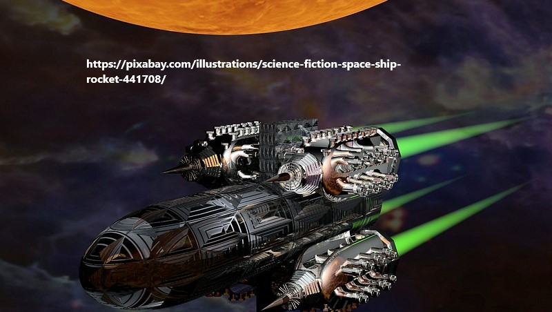
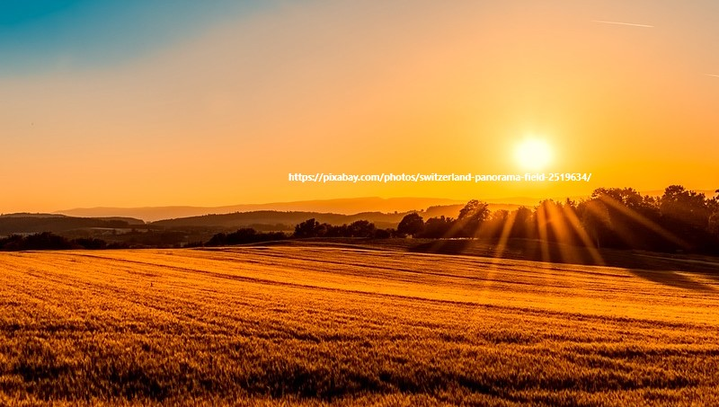
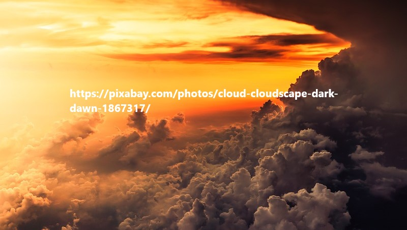
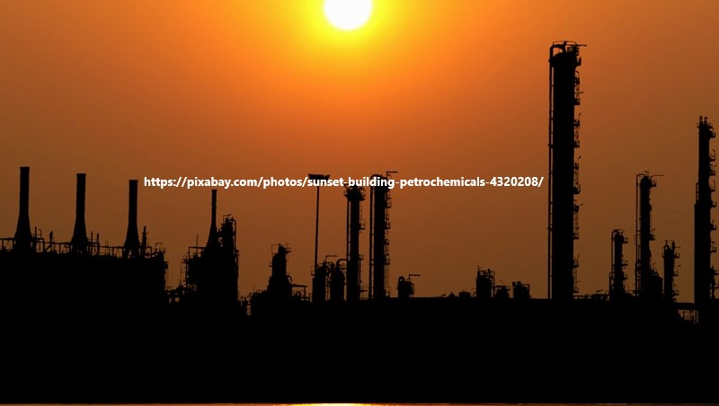
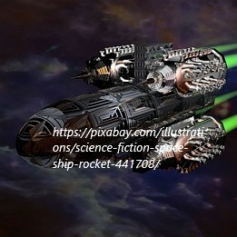
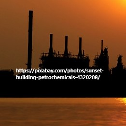

- 
- 
- 
- 
They say once you grow crops somewhere, you have officially colonized it. So, technically, I
colonized Mars. In your face, Neil Armstrong!
It is happy to hear that we can grow crops on the mars and that means when we do not need to
junk food anymore.


